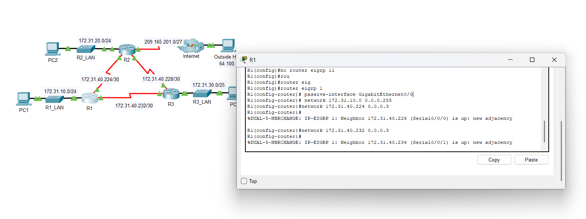
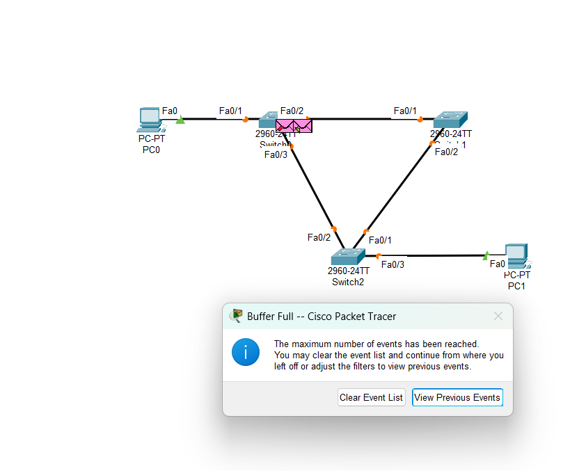
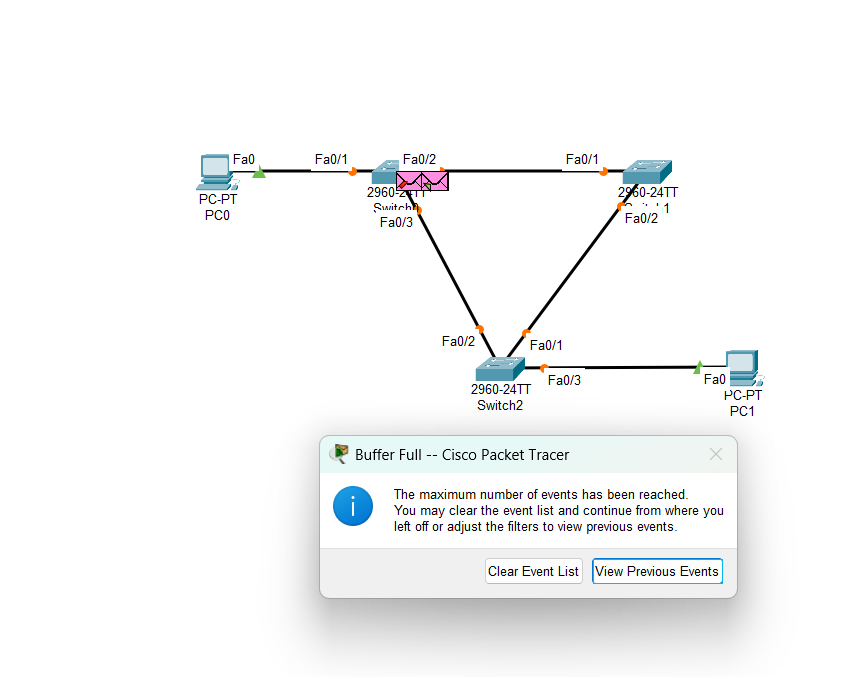

An IP address conflict occurs when two or more devices on the same network are configured with the same IP address.
This leads to unexpected behavior, communication errors, and loss of connectivity for affected devices.
Potential Causes:
Manual static IP assignment errors by administrators.
When administrators manually assign static IP addresses, they may accidentally assign the same IP to multiple devices, leading to conflicts.
Improper or overlapping DHCP address pool settings.
DHCP servers may be configured with overlapping address pools, causing multiple devices to receive the same IP address.
Device cloning or OS imaging without updating IP settings.
Cloning devices or using OS images without reconfiguring network settings can result in duplicate IP addresses across devices.
Rejoining devices attempting to use old IPs.
Devices that were previously disconnected from the network may attempt to reuse their old IP addresses, which might already be assigned to another device.
Scan the network using tools like arp -a or network mapping to detect duplicate IPs.
Identify devices sharing the same IP manually or through simulation.
Reassign a unique IP to one of the conflicting devices (e.g., change from 192.168.1.10 to 192.168.1.12).
Check and correct DHCP server configuration to prevent overlapping assignments.
Click on the router in Packet Tracer and switch to the CLI tab.
Check the DHCP pool configuration by running the following command:
show running-config | include dhcp
If there is an IP range conflict, correct the DHCP settings:
configure terminal
ip dhcp excluded-address 192.168.1.10 192.168.1.20
ip dhcp pool MYPOOL
network 192.168.1.0 255.255.255.0
default-router 192.168.1.1
end
Restart the DHCP service to apply the changes:
clear ip dhcp binding *
Ping test all IPs to verify uniqueness and restore connectivity.
Document IP usage and consider using IP address management tools.
2. Inter-Vlan Routing Issue
Problem Definition:
Inter-VLAN routing is the process of forwarding traffic between different VLANs (Virtual Local Area Networks) on a network.
This is typically done using a Layer 3 device, such as a router or a Layer 3 switch.
Without proper inter-VLAN routing, devices in different VLANs cannot communicate with each other.
Potential Causes:
Missing or misconfigured VLAN interfaces on the router or Layer 3 switch.
Incorrect IP addressing or subnetting for VLANs.
Switchport configurations not set to trunk mode for inter-VLAN communication.
g01.10 g01.30 are sub interfaces of g01 and they are configured with IP address. Their encapsulation type is dot1q and they must match with the VLAN ID
Fix it:
configure terminal
interface gigabitEthernet0/1.10
no encapsulation dot1Q 30
exit
interface gigabitEthernet0/1.30
no encapsulation dot1Q 10
encapsulation dot1Q 30
ip address 172.17.30.1 255.255.255.0
exit
interface gigabitEthernet0/1.10
encapsulation dot1Q 10
ip address 172.17.10.1 255.255.255.0
no shutdown
exit
After that, try to ping from one VLAN to another to check if it is working
3. DHCP Server Issues
Problem Definition:
Devices fail to obtain IP addresses automatically due to DHCP server
misconfigurations or failures. This can result in devices being unable
to communicate on the network, leading to connectivity issues and disruptions
in network services. Without a valid IP address, devices cannot access shared resources,
connect to the internet, or communicate with other devices on the network.
Potential Causes:
DHCP server is not enabled or running.
The DHCP server may be turned off or not functioning, preventing devices from obtaining IP addresses.
IP address pool is exhausted.
The DHCP server has run out of available IP addresses to assign to devices.
Network devices are not configured to use DHCP.
Devices may be set to use static IPs instead of obtaining them automatically from the DHCP server.
Verify that the DHCP server is enabled and running
Open the CLI on the router and configure the interface connected to the switch:
Router> enable
Router# configure terminal
Router(config)# interface GigabitEthernet0/0
Router(config-if)# ip address 192.168.1.1 255.255.255.0
Router(config-if)# no shutdown
Router(config-if)# exit
Then configure the DHCP service on the router:
Router(config)# ip dhcp pool LAN
Router(dhcp-config)# network 192.168.1.0 255.255.255.0
Router(dhcp-config)# default-router 192.168.1.1
Router(dhcp-config)# dns-server 8.8.8.8
Router(dhcp-config)# exit
Check the IP address pool and expand it if necessary
If one or more PCs do not receive an IP address (e.g., PC9), the address pool may be too small. Check for excluded addresses:
Router# show running-config
If the range is too narrow, reduce the excluded IP range like this:
Router(config)# no ip dhcp excluded-address 192.168.1.1 192.168.1.191
Router(config)# ip dhcp excluded-address 192.168.1.1 192.168.1.189
This change increases available IPs in the pool for more clients.
Ensure devices are set to obtain IP addresses automatically
For each PC:
Click on the PC.
Go to the Desktop tab.
Open IP Configuration.
Select the DHCP option (instead of Static).
After selecting DHCP, the PC should receive an IP like 192.168.1.190 or higher (depending on the available range).
4. DHCP Spoofing Attack: Prevention & Mitigation
Problem Definition:
An attacker introduces a rogue DHCP server to distribute malicious network configurations, potentially intercepting or redirecting network traffic.
I was unable to save the current status and initial configurations on Packet Tracer, use the following commands:
For Router 2:
enable
configure terminal
interface gigabitEthernet0/0/0
no shutdown
exit
ip dhcp pool CCNA
network 192.168.2.0 255.255.255.0
default-router 192.168.2.100
dns-server 192.168.2.50
exit
interface gigabitEthernet0/0/0
ip address 192.168.2.100 255.255.255.0
no shutdown
exit
exit
write memory
For Router 1:
enable
configure terminal
interface gigabitEthernet0/0/0
no shutdown
exit
ip dhcp pool CNC
network 192.168.1.0 255.255.255.0
default-router 192.168.1.100
dns-server 192.168.1.50
exit
interface gigabitEthernet0/0/0
ip address 192.168.1.100 255.255.255.0
no shutdown
exit
exit
write memory
DHCP Spoofing Attack Simulation:
Device Type
IP Address
Connected Port
Details
Status
Legitimate DHCP Server
192.168.1.100
Switch Port 5
IP Range: 192.168.1.10-50
Secure
Rogue DHCP Server
192.168.2.100
Switch Port 6
IP Range: 192.168.2.10-50
ATTACKER
Workstation 1
192.168.2.6
Switch Port 1
Compromised by rogue DHCP
COMPROMISED
Workstation 2
192.168.1.2
Switch Port 2
Normal client
Secure
Workstation 3
192.168.1.3
Switch Port 3
Normal client
Secure
Workstation 4
192.168.2.5
Switch Port 4
Compromised by rogue DHCP
COMPROMISED
Solution Steps:
Enable DHCP Snooping:
With this, all ports are untrusted by default, and only the trusted ports can send DHCP messages.
ip dhcp snooping
Configure Trusted Ports:
interface fastethernet 0/5
ip dhcp snooping trust
no ip dh snooping information option
exit
Verify Configuration:
do show ip dhcp snooping
show ip dhcp snooping binding
Implement Additional Protections:
Port security to limit device connections.
Dynamic ARP Inspection (DAI).
IP Source Guard.
Expected Results:
Only authorized DHCP servers can distribute IP addresses.
Rogue DHCP server responses are blocked.
Network clients receive legitimate configuration.
Remember: Attack = Spoofing | Defense = Snooping
5. Default Gateway Issue
Problem Definition:
The default gateway is a critical network component that acts as an access point or IP router for devices
to communicate with other networks, including the internet. Issues with the default gateway can disrupt network
connectivity and prevent devices from accessing external resources.
Potential Causes:
Incorrect default gateway IP address configured.
If the default gateway IP is set incorrectly on the client device, it will fail to communicate with external networks.
Default gateway device (e.g., router) is down or unreachable.
The router or gateway device may be powered off, disconnected, or experiencing hardware/software issues.
Network interface issues on the client device.
Problems with the network adapter, such as driver issues or physical damage, can prevent proper communication with the gateway.
verify router configuration for your network show running-config on exec mode.
check all pc for their if configuration by their vlan and fix them
Check switch configurations
in switch1 there is no default gateway and switch2 there is no ip address
Fix them by these instructions
switch1
enable
configure terminal
ip default-gateway 192.168.10.1
exit
write memory
switch2
enable
configure terminal
interface vlan 1
ip address 192.168.11.2 255.255.255.0
no shutdown
exit
exit
write memory
Use the ping or tracert command to test connectivity after making changes.
6. NAT Configuration Issues
Problem Definition:
Network Address Translation (NAT) is a process used to map private IP addresses within a
local network to a public IP address for internet access. Misconfigurations in NAT can prevent
devices on a private network from accessing the internet or external resources. This can lead
to connectivity issues and disrupt network operations.
Potential Causes:
Incorrect NAT rules or settings.
NAT rules on the router may be misconfigured, leading to improper translation of private IP
addresses to public IP addresses. For example, missing or incorrect ip nat inside
or ip nat outside configurations can cause issues.
Overlapping IP address ranges.
If the private IP address range overlaps with another network's IP range, NAT may fail to function
correctly. This can occur in cases where multiple networks are merged or when VPNs are used.
Insufficient NAT resources on the router.
Routers have a limited capacity for NAT translations. If the number of devices exceeds this capacity,
new devices may fail to establish connections. This is often referred to as "NAT table exhaustion."
Check all network devices ping ****.****.****.**** to destination.
As we see, only R2 could send ping. So there could be a NAT issue in the network.
View NAT translation on R2 with show ip nat translation.
If the output is empty, it indicates that no NAT translations are currently active. This could be due to:
No traffic has passed through the NAT-enabled interfaces yet.
Incorrect NAT configuration, such as missing or misconfigured access lists or NAT rules.
Interfaces not properly marked as ip nat inside or ip nat outside.
Devices in the network are not generating traffic that requires NAT.
Verify and correct NAT rules on the router.
Check the NAT configuration on the router using the following command:
show running-config | include nat
If interfaces are not properly marked as ip nat inside or ip nat outside, fix NAT with:
interface s0/0/0
ip nat outside
interface s0/0/1
ip nat inside
Ping all network devices and show the access list with show running-config to check NAT configuration.
Upgrade router resources if necessary.
Info: For each VLAN, there must be an access permit to ensure proper communication and security.
If a VLAN access-list permit is not present, execute the following command:
R2(config)# no access-list 101
R2(config)# access-list 101 permit ip 10.4.10.0 0.0.1.255 any
This command allows NAT for all IPs between 10.4.10.0 and 10.4.11.255. The "any" keyword indicates that access to all destination networks is permitted.
Recheck all configurations and test connectivity again to ensure the issue is resolved.
7. EIGRP Routing Protocol Problem
Problem Definition:
Network connectivity issues arise between routers running the EIGRP protocol,
leading to missing routes and neighbor adjacency failures. For instance, consider
a scenario where Router A and Router B are connected via a serial link, but Router
A cannot establish an EIGRP neighbor relationship with Router B. This could result
in Router A being unable to learn routes to networks behind Router B, causing communication
failures between devices in those networks.
Potential Causes:
Mismatched Autonomous System (AS) numbers between routers
Missing network statements in EIGRP configuration
Auto-summary causing route aggregation issues
Missing passive-interface configuration on LAN ports
ACL or firewall blocking EIGRP multicast traffic (224.0.0.10)
If their number inconsistent, fix it in configuration mode using:
first copy EIGRP contents
no router eigrp [AS_NUM]
router eigrp [NEW_AS_NUM]
network [NETWORK] [WILDCARD_MASK] ////Apply this for all list items

Check EIGRP Neighbors:
show ip eigrp neighbors
Investigate missing adjacencies
If there is missing adjacencies then:
enable
configure terminal
router eigrp [AS_NUM]
network [NETWORK] [WILDCARD_MASK]
no auto-summary
Check connectivity with ping
Important Notes:
Wildcard mask is the inverse of subnet mask (e.g., /24 → 0.0.0.255)
For internet connectivity, redistribute static default route:
ip route 0.0.0.0 0.0.0.0 [NEXT_HOP]
router eigrp [AS_NUM]
redistribute static
8. Switch Loop Issues
Problem Definition:
Network experiences severe performance degradation or complete outage due to broadcast storms
caused by switching loops, where packets circulate endlessly between interconnected switches.
Primary Symptoms:
Network slowdown or complete unresponsiveness
Switch LEDs flashing rapidly and continuously
High CPU utilization on network devices
Flapping MAC address tables
Potential Causes:
Redundant physical connections between switches without proper loop prevention
Disabled or misconfigured STP (Spanning Tree Protocol)
Explanation: This command enables Spanning Tree Protocol (STP) on VLAN 1. STP detects loops and automatically blocks redundant paths to prevent broadcast storms.
Verify STP Status
Check the STP status on each switch:
Switch# show spanning-tree
What to look for:
Which switch is the Root Bridge
Port roles: Root Port (RP), Designated Port (DP), Blocking
Example Output:
Interface Role State
Fa0/1 Desg Forwarding
Fa0/2 Root Forwarding
Fa0/3 Altn Blocking
✅ Blocking port detected = STP is working and breaking the loop.
Wait for Convergence
STP takes about 30-50 seconds to converge. One switch becomes the Root Bridge, all switches calculate the shortest path to the root, and redundant links are blocked.
Perform a Ping Test
On a PC (e.g., PC1), run:
ping 192.168.1.20
Expected Result: Successful pings, no broadcast storm, and smooth network response.
Check MAC Address Table Stability
On each switch, run:
Switch# show mac address-table
Explanation: If MAC addresses are stable and not constantly changing, STP has eliminated the loop.
(Optional) Manually Set the Root Bridge
To force a specific switch to become the Root Bridge:


 
